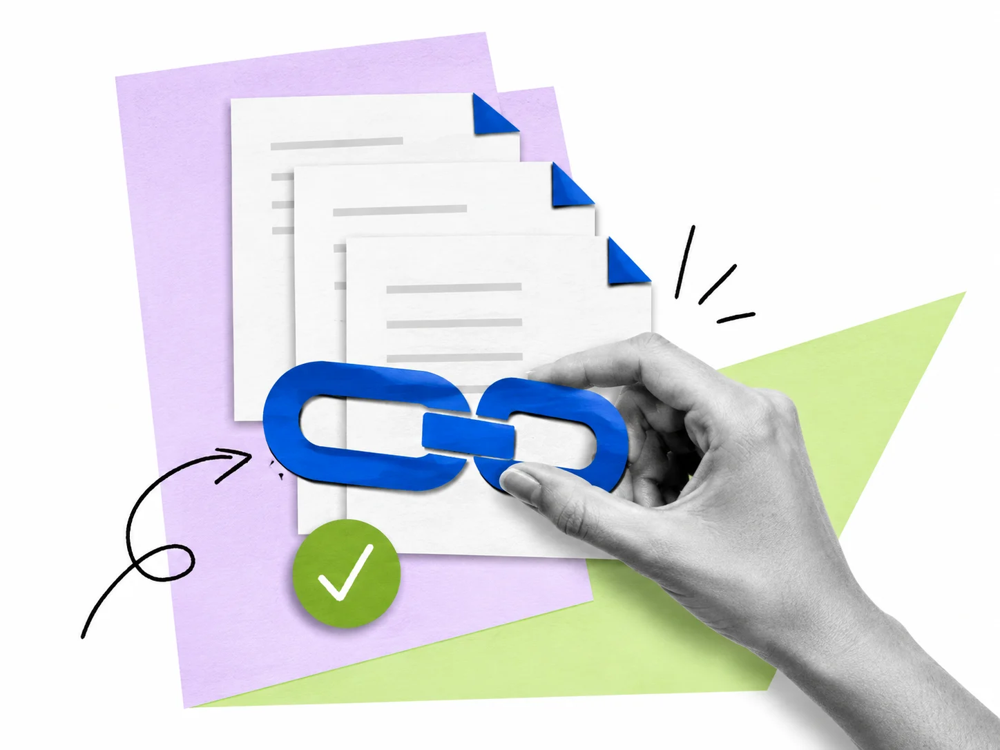
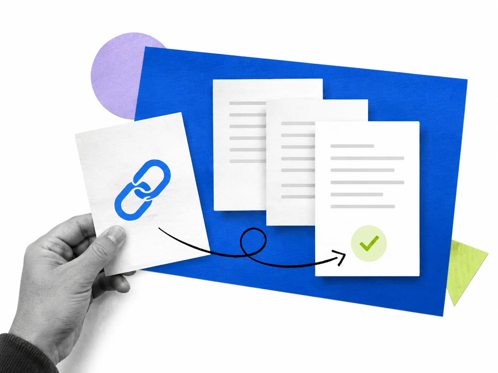

A little care for your Confluence links
Keep your team's
knowledge
connected.
Find broken links. Bring in the right people. Give every page a clear path forward.
Free for up to 10 users. Built for Confluence Cloud.
Marketplace review in progress. Public installation is not yet available.

Right at home in your workspace.
Built on Atlassian Forge Follows page ownership You review every replacementFrom a broken link
to a job well done.
Three simple steps to knowledge your team can keep using.
-
1. Find
Know what needs attention.
Scan a page or a whole space. See confirmed broken links separately from access restrictions and uncertain results.
-
2. Assign
Bring in the right people.
Issues follow the current page owner. Keep work moving with a personal queue, work states, and recorded exceptions.
-
3. Resolve
Make the fix with confidence.
Preview exact or base URL replacements. Permissions, drafts, and page versions are checked before publishing.
Illustrative workflow. See the guide for the full app behavior and limits.
Less guesswork. More clarity.
Not every warning
is a broken link.
A missing page and a sign-in wall need different next steps. Link Steward keeps the signal clear, so your team knows where to focus.
Understand your resultsBroken
A public destination returned 404 or 410.
Time to review the link.
Needs review
A sign-in wall, timeout, or access restriction.
A check couldn't reach a conclusion.
Available
The destination responded successfully.
One less loose end.

Your pages. Your decisions.
A careful fix.
A clearer workspace.
Choose a space, run a scan, and take it one page at a time. You choose which public HTTPS domains to check and review replacements before they're saved.
- Internal Confluence destinations checked automatically
- External domains enabled by a space administrator
- Every successful replacement creates a page version
A few good
questions.
Looking for something else?
We're here to help
How do I get started?
Open Link Steward in Confluence, choose a space, and run a scan. A space administrator configures external domains and scheduled checks. The setup guide walks through each step.
Will Link Steward change my pages automatically?
Link replacements are published only after an authorized user previews and saves them. Optional owner reminders are off by default; when enabled, they can add a native page comment. Learn more in the replacement guide.
Does it check every kind of link?
The app checks supported links in published Confluence pages and administrator-enabled public HTTPS destinations. Plain text URLs, third-party macro internals, URL fragments, and content meaning are not checked. Read the limits and recovery guide.
Is Link Steward free?
Link Steward is free for up to 10 users, with paid plans for larger teams. Contact support for questions about your team.
Give your knowledge
a little link love.
A clearer next step for every broken link in Confluence.
Read the setup guide